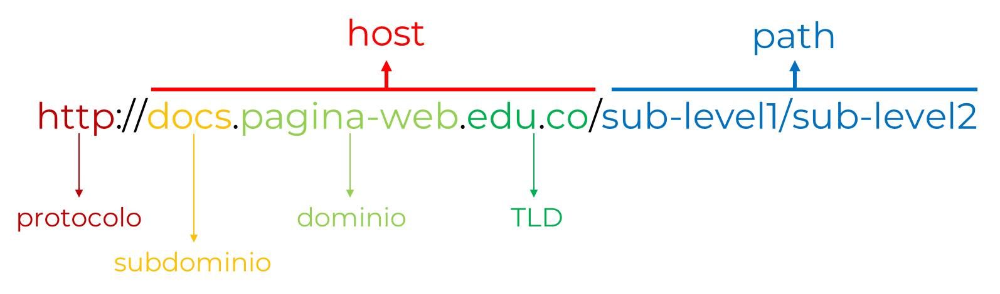
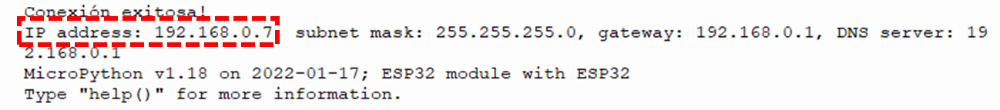
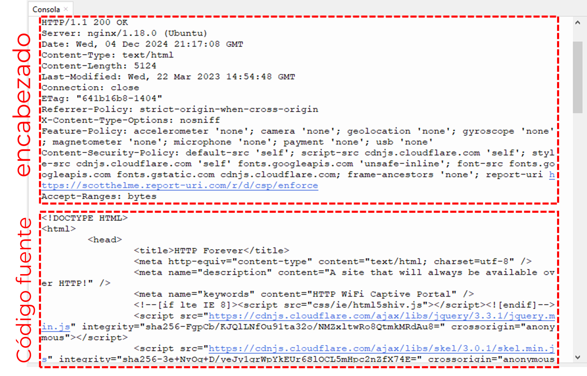

Ejercicio 4-1: Acceder a dirección Web
Descripción
Usando Micropython, con el Ejercicio 4-1: Acceder a dirección Web se va a aprender a acceder a una dirección Web con protocolo HTTP y que se retorne el contenido de este.
Para este ejercicio se necesita el Entrenador ESP32, ¡el cual puede ser adquirido en este link al mejor precio!

Código
Para este ejercicio se necesitará el archivo:
- main.py: Script principal de Python. Contiene el código para conexión a una red WiFi específica y acceder a la página web con protocolo HTTP.
main.py:
from machine import Pin import socket import network p2 = Pin(2,Pin.OUT) def do_connect(ssid,pwd): wlan = network.WLAN(network.STA_IF) wlan.active(False) wlan.active(True) if not wlan.isconnected(): p2.off() print('Conectando a red WiFi...') wlan.connect(ssid, pwd) while not wlan.isconnected(): pass p2.on() print('Conexión exitosa!') config = wlan.ifconfig() print("IP address: " + config[0] + ", subnet mask: "+ config[1] + ", gateway: " + config[2] + ", DNS server: " + config[3]) do_connect("XXX","YYY") def http_get(url): _, _, host, path = url.split('/', 3) addr = socket.getaddrinfo(host, 80)[0][-1] s = socket.socket() s.connect(addr) s.send(bytes('GET /%s HTTP/1.0\r\nHost: %s\r\n\r\n' % (path, host), 'utf8')) while True: data = s.recv(100) if data: print(str(data, 'utf8'), end='') else: break s.close() http_get('http://httpforever.com/')
Explicación paso a paso
main.py
Con la teoría explicada en la sección anterior, se procede a explicar el código desarrollado:
En primer lugar importamos las librerías machine.Pin, socket y network:
from machine import Pin import socket import network
Luego se utiliza esta sección de código para establecer la conexión a la red WiFi específica:
def do_connect(ssid,pwd): wlan = network.WLAN(network.STA_IF) wlan.active(False) wlan.active(True) if not wlan.isconnected(): p2.off() print('Conectando a red WiFi...') wlan.connect(ssid, pwd) while not wlan.isconnected(): pass p2.on() print('Conexión exitosa!') config = wlan.ifconfig() print("IP address: " + config[0] + ", subnet mask: "+ config[1] + ", gateway: " + config[2] + ", DNS server: " + config[3]) do_connect("XXX","YYY")
Este es el mismo código definido en el Ejercicio 3-2: Conectarse a red WiFi, en el cual se da una explicación paso a paso. Se debe tener en cuenta que se debe cambiar el contenido con la información de la red WiFi propia:
- XXX: Nombre de su red WiFi
- YYY: Contraseña de su red WiFi
Despues, se crea una función llamada http_get que recibe un parámetro: url que corresponde a la dirección web de la página HTTP deseada:
def http_get(url):
Luego se divide esta dirección recibida en dos partes:
- host: nombre de dominio
- path: ruta de acceso de un archivo dentro del dominio

_, _, host, path = url.split('/', 3)
Se utiliza la función socket.getaddrinfo() para obtener la dirección IP y puerto al cual se va a conectar el socket teniendo en cuenta que se va a conectar a un host (de la dirección ingresada) y puerto (80 para el caso de protocolo HTTP) específico:
addr = socket.getaddrinfo(host, 80)[0][-1]
Luego se crea el objeto s de clase socket.socket y se conecta a la dirección IP obtenida en el código anterior. Se procede a enviar el comando GET:
s = socket.socket()
s.connect(addr)
s.send(bytes('GET /%s HTTP/1.0\r\nHost: %s\r\n\r\n' % (path, host), 'utf8'))
Y en un ciclo se va imprimiendo en consola toda la respuesta dada por el servidor, que contiene el código fuente de la página solicitada:
while True:
data = s.recv(100)
if data:
print(str(data, 'utf8'), end='')
else:
break
s.close()
Por último se llama a la función http_get. Se debe tener muy en cuenta de reemplazar la url para que siga la estructura de: http://host/path, es decir que esta función solo funciona para páginas con protocolo HTTP:
http_get('http://XXX/ZZZ')
Testeo en ESP32
Primero, se realiza la conexión del ESP32 a nuestro computador mediante USB:

Después ejecutamos el archivo main.py al dispositivo ESP32 y en consola se va a mostrar la dirección IP asignada dentro de la red WiFi que se conecto:

Luego se va a visualizar el encabezado y código fuente de la página web conectada:
